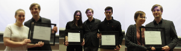

Media
„Transformations of the Mind: Technology and the Future of Creativity” A conversation with Jacek Dukaj
October 30 (Wednesday), 2019, Father Madden Hall, St. Michael’s College, 100 St. Joseph St.
Jacek Dukaj is a Polish writer and author of novellas, short stories and essays. He’s a worldbuilder, storyteller and idea man who—at the limits of humanity, reason and language—practices his art of the great narrative and immersive fiction. He was born in 1974 and lives in Cracow, Poland. Supported by Consulate General of the Republic of Poland in Toronto.
 |
 |
 |
 |
Fall Campus Day at University of Toronto
October 26, 2019
 |
 |
Relacja z wizyty uczniów Szkoły Polskiej Przy Konsulacie RP w Toronto w gazetce Merkuriusz
October 26, 2019
Więcej informacji tutaj
Jak to było za oceanem, czyli historia polonistyki na Uniwersytecie w Toronto – Izabela Pakuła
Więcej informacji tutaj
Polish Music Today: From Synth-pop to Hip Hop
September 27, 2017
During the first language and culture workshop in Fall 2017, our Visiting Graduate Student, mgr. Agnieszka Łaszczuk, together with Prof. Anna Rabczuk introduced the students to the new generation of musicians in Poland. The event involved language games and featured the best Polish music videos produced in recent years.

Meeting with students from SPK, Toronto
April 8, 2017
On April 8 we had the pleasure of hosting a group of high school students and teachers from SPK. We run lectures and workshops on Polish language and culture, followed up by lunch and a tour around the St. George Campus.
 |
 |
 |
 |
Awards Announced!
March 17, 2017
Four of our students received their awards at the Slavic Department Annual Award Ceremony. Congratulations to Martyna Ćwiek, Karol and Maria Czajkowscy, and Marianne Kałaczyński. This year, the event coincided with the departmental Slavic Talent Show, where our program was particularly well represented. Thank you to all our students for their egagement and presence!
